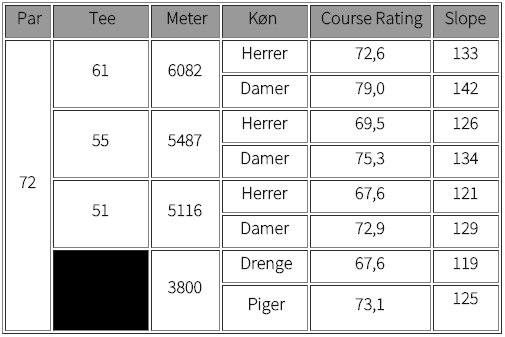

<div class="pages">
  <div data-page="lanes" class="page navbar-fixed toolbar-fixed" >
    <div class="navbar">
      <div class="navbar-inner">
        <div class="left">
          <a href="#" class="link back icon-only"><i class="icon icon-back"></i></a>
          <!-- <a href="#" class="back link icon-only"><i class="icon icon-back"></i></a> -->
        </div>
        <div class="center">Banerne</div>
        <!-- <div class="right"></div> -->
        <div class="right">
        </div>
      </div>
    </div>
    <div class="page-content" style="padding-top:45px;">
       <div class="content-block">
          <p>Fra juli 2015 har Hornbæk Golfklub 2 golfbaner:</p>
          <p><i>18-hullers banen og par-3 banen Lærkeager</i></p>
        </div>
        <div class="content-block">
          <center></center>
        </div>
        <div class="content-block" style="margin-bottom:0px;">
          <p><i>I det følgende beskriver vi den oprindelige bane - 18-hullers banen. Beskrivelse og information om Lærkeager banen, som er en 9-hullers Play-and-Pay bane, kan du finde under menuen "Lærkeager banen" ude til venstre.</i></p>
          <p>Information om banen</p>
          <p>Med 6082 meter fra tee 61 er Hornbæk en af landets længste baner.</p>
          <p>Mange af landskabets spilletekniske forhindringer, så som levende hegn, bakker, søer og vandløb, er i spil og gør sammen med længden også banen til een af landets sværeste golfbaner - men alligevel spilbar for golfspillere på alle niveauer.
</p>
          <p>Banen er meget varieret, nogle huller ganske kuperede, andre med svære doglegs. Undervejs møder spillerne raviner, stenrøser, diger, tværgående gravede grøfter, en rislende bæk og meget mere. Især de afsluttende sidste syv huller giver både en natur- og en golfoplevelse ud over det sædvanlige.</p>
        </div>
        <div class="content-block" style="margin-top:0px;">
          <center></center>
        </div>
        <div class="content-block" style="margin-bottom:0px;">
          <p>Banen fik en fantastisk anmeldelse fra Teetime i 2011</p>
          <p>I 2011 blev vi rated som den 9. bedste bane i landet - se her og her</p>
          <p>Politikens Store Golfbog (2004) har Hornbæk med blandt Danmarks 10 bedste baner.</p>
          <p>Jyllandsposten har anmeldt banen i 2004.</p>
          <p>DGU har anmeldt banen i 2002.</p>
        </div>
    </div>
    </div>
    </div>
  </div>
</div>
